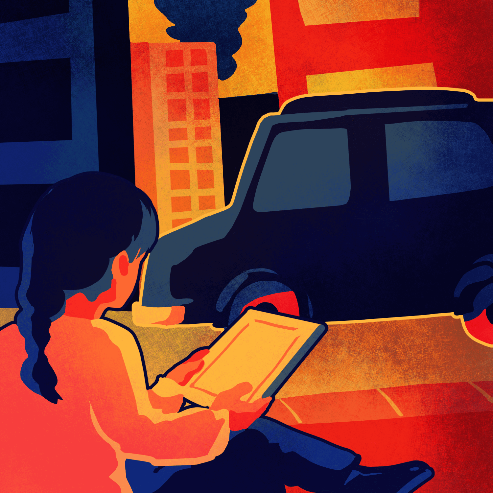
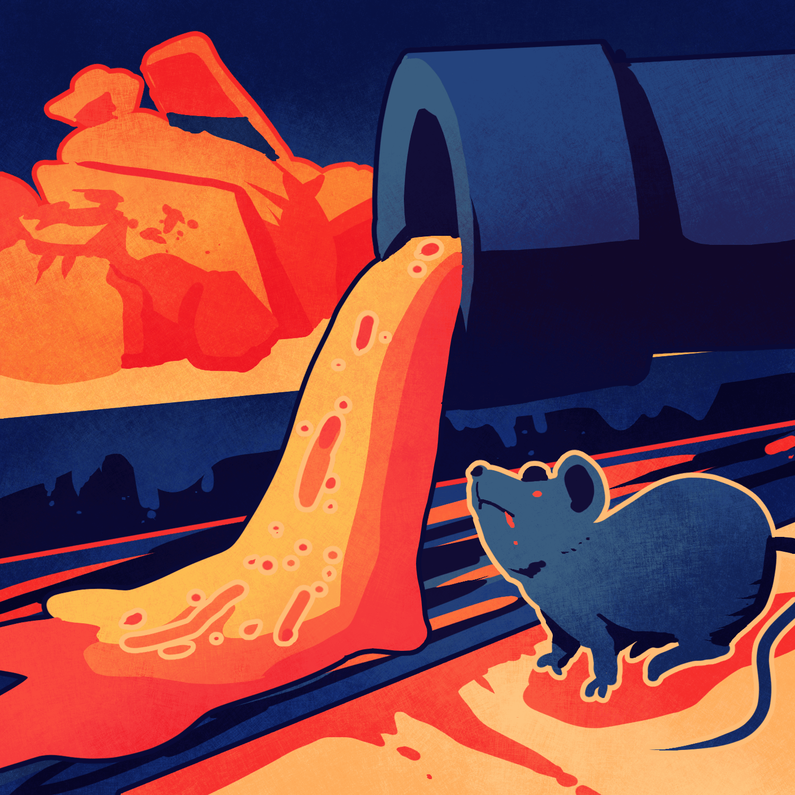

당신은 밀림을 개발하도록 신탁을 내렸습니다.
정부의 관계자들은 환호를 지르며 당장 밀림을 밀고
건물을 세우라고 지시를 내렸습니다.
3세기를 살아온 나무는 굉음을 내며 쓰러졌고
터를 잡아 숲을 가꾸며 살아가던 부족민들도
무너져가는 마을을 바라보며 허망하게 떠났습니다.

푸르던 땅은 회색빛으로 물들었고 곧 많은 사람들이
찾아오게 되었습니다.
과학과 기술이 들어오고 많은 돈을 벌어들였습니다.
사람들은 배가 부르고 풍족해졌습니다.
모든 아이들이 학교에 다니고 자동차를 타고다니며
가고싶은 곳 하고싶은 것들을 할 수 있게 됐습니다.

사람들은 무분별한 개발에 이미 익숙해졌습니다.
한 평의 땅도 그대로 두지않고 개발을 진행했고 도시는 오염되어갑니다.
생태계는 파괴됐고 행성에는 오물과 쥐,바퀴벌레 등이 가득합니다.
사치가 만들어 낸 쓰레기는 둘 곳이 없고 악취가 나지 않는 곳이 없습니다.
Next